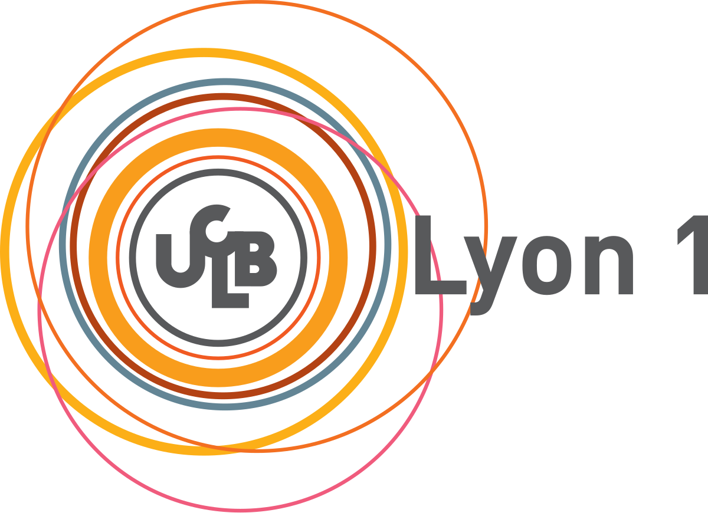
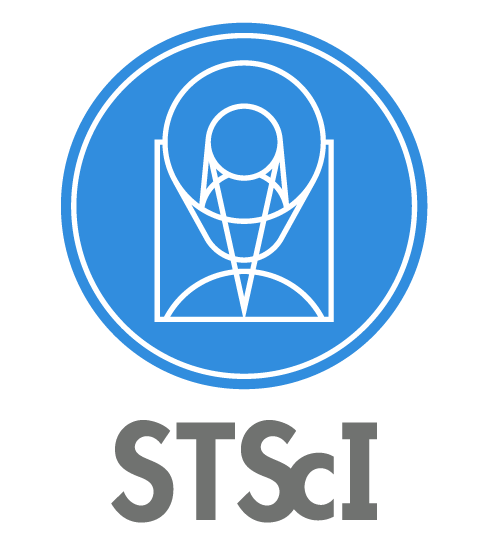
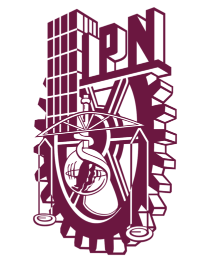
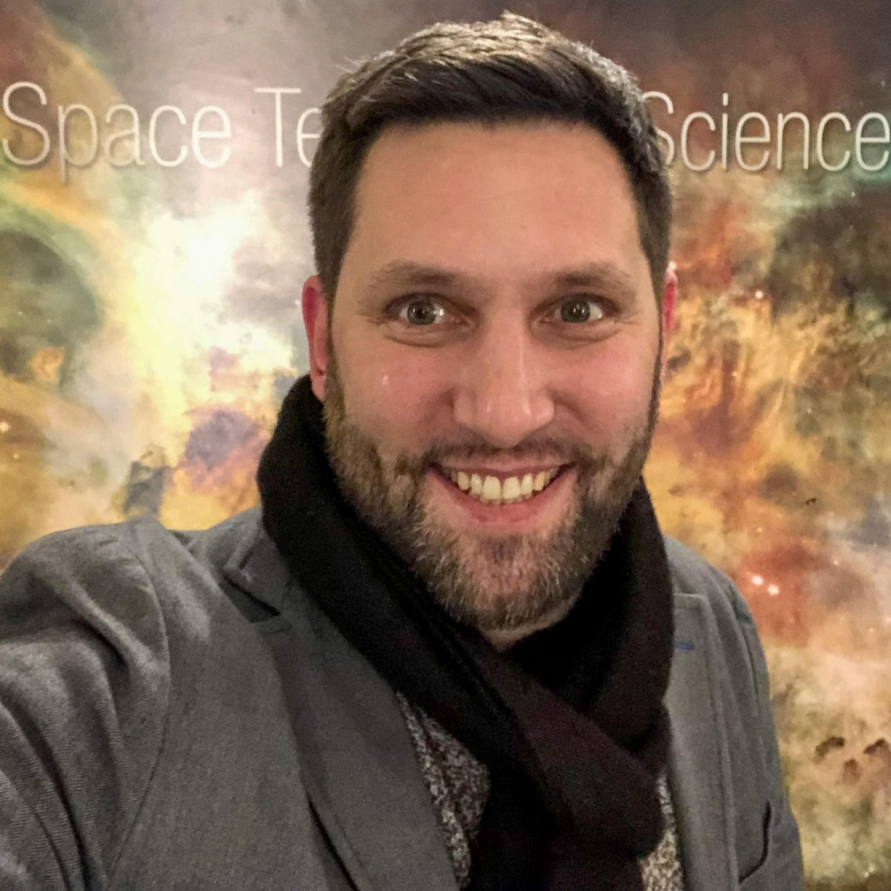

About me, what I do
Université Claude Bernard Lyon-I, France

PhD in Physics & Astrophysics (2005) Doctorat
On sky validation of the polychromatic laser guide star concept for adaptive opticsAdvisor: Renaud Foy †
Université Grenoble Alpes, France
Master's in Astrophysics (2001) DEA Astrophysique et Milieux Dilués
University of Utah, USA
Master of Science in Instrumentation Physics (2000)
Université Savoie Mont Blanc, France
Technology Degree in Physical Measurements (1998) DUT Mesures Physiques
Post PhD positions I have held since 2006:
Space Telescope Science Institute, USA
Space Telescope Science Institute, USA

8 years, 7 months and counting
Scientist (Full) (June 2023 - Present) Long Term Senior Research Staff
STScI Scientist III (October 2020 - June 2023) Senior Research Staff
Support Scientist (August 2017 - October 2020) Senior Research Staff
European Southern Observatory, Chile 8 years
Operations Staff Astronomer (August 2009 - July 2017) Paranal Adaptive Optics Specialist
Instituto Politécnico Nacional, Mexico

10 months
Assistant Professor (October 2008 - July 2009) Profesor/Investigador Titular A at ESFM
Universidad Nacional Autónoma de Mexico (UNAM), Mexico 2 years
Postdoctoral Fellow (october 2006 - September 2008) Investigador Postdoctoral at IA-UNAM
Space Telescope Science Institute, USA
JWST/NIRCam Instrument Scientist (2017 - Present) Documentation, User support
JWST/NIRCam Coronagraphy Lead (2017 - Present) Commissioning, Calibrations, Pipeline
JWST Coronagraphs Working Group / Coordination Team Lead (2017 - Present) NIRCam and MIRI
Roman Coronagraph Expert and Liaison (2017 - Present) To Science Investigation Teams (SITs), Community Participation Program (CPP), CTC and SSC
Roman Coronagraph Commissioning and Calibration Lead (2026 - Present)
European Southern Observatory, Chile
Paranal Lead Instrument Scientist of VLT/SPHERE (2014-2017) User Support, Commissioning, Tests, Calibrations
Paranal Lead Instrument Scientist of VLT/NACO (2009-2015) User Support, (re)Commissioning, Tests, Calibrations
Adaptive Optics Group Coordinator (2009 - 2016) Commissioning, User support
UT4 Coordinator (2012-2013)
UT3 Coordinator (2014-2015)
Shift Coordinator (2013 - 2017) Lead/management of the whole VLT/VLTI/VISTA/VST operations at night and/or day.
NASA Programatic
Executive Committee of the Exoplanet Exploration Program Analysis Group (ExoPAG) (2024- Present)
Journal Referee
A&A, ApJ, AJ, JATIS, RevMex A (2008 - Present)
Funding/Grants
Chair and/or Reviewer for several NASA Panels (confidential) Exoplanets, Instrumentation
Reviewer for NSF Panels (confidendial)
Thesis Committees
PhD Defense (Reviewer): Charles Goulas at Paris Observatory, France (2025)
PhD Defense (Advisor): Blake Pantoja at Universidad de Chile, Chile (2019)
PhD Defense (Examiner): Mathias Nowak at Paris Observatory, France (2019)
PhD Defense (Advisor): Jozua de Boer at Leiden Observatory, Netherlands (2018)
PhD Defense (Reviewer): Jose Luis Aviles Urbiola at INAOE, Mexico (2010)
Telescope Time Allocation
Gemini CNTAC, National Time Allocation Committee (2014 - 2016)
At STScI
Science Personel Committee (SPC) (2024 - Present) Promotions, Renewal, transfers to the Senior Science Staff
Executive Committee (EC) of the Science Staff: Elected member (2020 - 2022)
Research Support Advisory Committee (RSAC) (2020 - 2022) Director's Discretionary Funds
Postdoc Mentoring Program (2019 - Present) Mentor of 4 Postdocs
STScI Fellowships Selection Committee (2019, 2022, 2023)
AURA Tenure Track Exoplanet Positions Conducted Interviews as Roman representative (2019)
At ESO
Instrument Review Panels (2012 - 2017) Panel member for SPHERE Paranal Acceptance Europe (PAE), ERIS Phase A, the Adaptive Optics Facility (AOF)
Observatory Reviews and one ESO Overview (2010 - 2016) Participant / Speaker
2 PhD students
Blake Pantoja (2014 - 2019), Universidad de Chile, co-advised with James Jenkins
Jos de Boer (2012 - 2018), Leiden University, co-advised with Christoph Keller Olivier Chesneau Prize for the best PhD thesis in high angular resolution astronomy
6 Master’s students
Rohan Kane (2025 - Present), Towson University
6 Bachelor’s students
2 high school students
from the Baltimore Polytechnic Institute's Ingenuity Project, a local public school advanced program in STEM.
Postgraduate Programs & Schools
Optics Laboratory (2008 - 2009) 216 hours, 9h/week, 3 classes/sessions
Instituto Politécnico Nacional / Escuela Supérior de Física y Matemáticas, Mexico
Optics Laboratory (2008 - 2009) 216 hours, 9h/week, 3 classes/sessions
Université Claude Bernard Lyon-I, France
Computer Science Principles (2003 - 2004) 64 hours
researchers can have a life too
I don't read merely enough books. I am an avid amateur of "world" music, jazz and traditional music forms from everywhere. I play, badly, the violin since age 6. I enjoy taking photographs, practicing/playing sports, hiking, cooking and eating! More than anything, I love to travel and embrace different cultures, especially with my family. Recently (and more so with covid), my wife, kids and I took up gardening and urban "mini farming". Doing stuff with my hands seems to give a nice break and breath to my mind.

